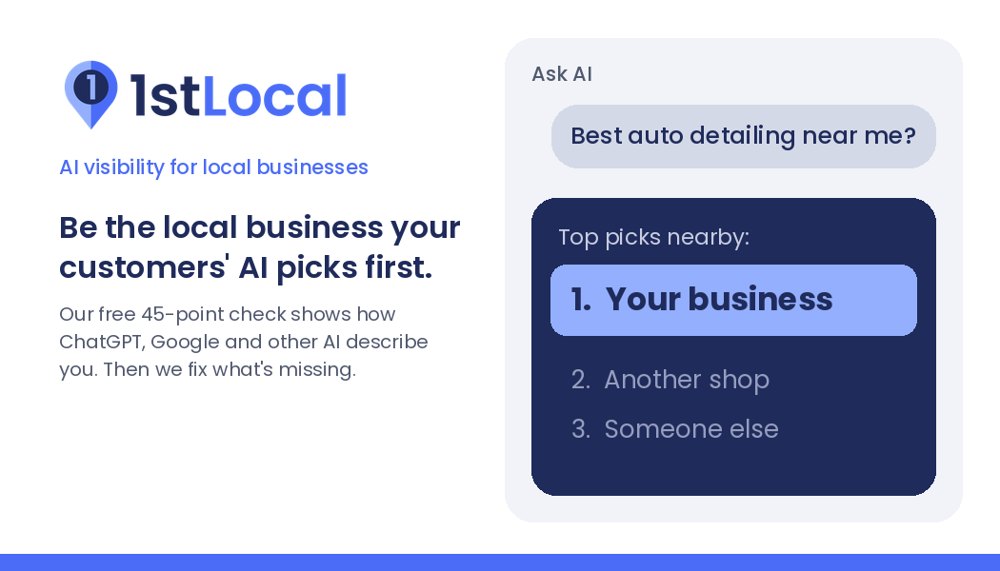

01
Free
Check
- 15 questions
- 3 AIs
- 45 answers
We ask ChatGPT, Google's Gemini and Perplexity 15 questions your customers really ask, across your towns. You see who AI names and how often.
Austin · Lake Travis · anywhere local
Our free 45-point check shows how ChatGPT, Google's Gemini and Perplexity describe your business. Then we fix what's missing.
The shift
Customers used to search and scroll. Now they ask: "Best auto detailing near me?"
AI answers with two or three names. If you're not one of them, you never get the call.

What we found
From our own tests. Businesses unnamed.
0 of 45
His customers rave about him, yet he wasn't named in a single AI answer.
5 of 15 vs 0 of 15
AI recommends it in Bee Cave, and never in nearby Lakeway or Austin.
1 of 15
AI knew it by name every time, but recommended it in only 1 of 15 "recommend me" answers.
How it works
01
Free
We ask ChatGPT, Google's Gemini and Perplexity 15 questions your customers really ask, across your towns. You see who AI names and how often.
02
One fixed price
We fix what AI reads: your website's descriptions and structured data, FAQs, Google Business Profile, directory listings, and the outside sites AI trusts.
03
A few weeks later
We ask the same questions again and show you the before and after.
What we fix
Your time
We've run businesses ourselves, so we know. We keep your part small, and we do the rest.
Pricing
The check is free. If you want the fixes, we quote one fixed price after your check, with no contract.
AI answers vary day to day. We show what AI said; we don't promise what it will say.
Family-run
100% of our profits go to Oceanbags Foundation, our family's nonprofit, started in Austin in 2023. It sends rugged backpacks made from ocean-bound plastic to kids in crisis around the world, and puts its Kids and Planet books in Title I classrooms. kidsandplanet.com
Who we are
After graduating from St. Edward's University here in Austin, I co-founded the nonprofit Oceanbags Foundation with my parents, and I run it day to day. When you work with 1stLocal, you also help Oceanbags support kids in crisis around the world. All profits go there. — Zane Haas
FAQ
How often AI assistants name your business when someone asks for a recommendation in your field and town.
It overlaps, but AI answers lean on structured data, reviews, listings and outside sites differently than a Google results page. We test the AI answers directly.
15 customer-style questions asked of three AIs across your towns (45 answers), who AI names instead of you, and how many fixable gaps we found.
No one honest can. We fix what AI reads and retest the same questions so you can see the change.
We started here, but the work is done online, for local businesses anywhere.
Free, no obligation
See who AI names in your towns, and why.
Prefer to talk? Call or text Zane at (512) 516-7733 (text) · zane@firstlocal.io